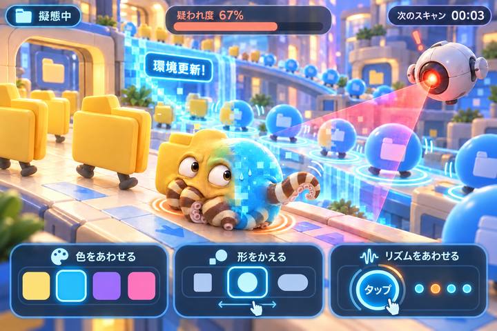

ブラウザを更新して、もう一度お試しください。
データの街に、タコが一匹。周りが変わったら、きみも変わろう。
タコも、監視ドローンも待っています。
きみはデータの街に紛れたミミックオクトパス。90秒間、監視ドローンに見つからずに生きのびよう。

体そのものが変わり、腕がちょっとはみ出す。これは制作イメージです。ゲームの3Dキャラクターは実際に動きます。
ゲームを止めて、周囲と自分の違いを記録しました。ChatGPTに次の一手を相談できます。閉じた後は「潜伏をつづける」で再開。